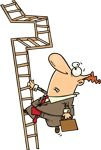
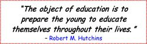
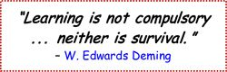

After the publication of Concise Learning and How to Study with Mind Maps (HTSWMM), I began receiving many e-mails from working professionals. Although some commented on how they had adapted the Concise Learning Method (CLM) to their work lives, thereby becoming more productive knowledge workers, others expressed disappointment that the book didn’t specifically address how to use CLM for lifelong learning in the workplace.
This bonus chapter attempts to meet that need. Students, however, have not been left out. Although it’s written with professionals in mind, both those working at companies and those working independently, students will also find value in the chapter, especially those students about to graduate and experience the opportunities and challenges of life outside of the classroom.
Learning does not stop when we leave school. As professionals, we continue learning, extending the process that began when we were kids and continued through our years in school.

As evidenced by the many things we learn prior to ever entering school, one doesn’t have to sit in a classroom for learning to happen. Neither does one necessarily need a teacher; teachers are just one source of information. They are important, certainly, but not necessary for learning to occur, especially when it comes to lifelong learning, which most often takes place outside of a classroom.
Learning among students and professionals remains very similar; it’s only the learning metrics and outputs that change. Product deliverables and performance reviews take the place of exams and pop quizzes, and the consequences of “failing” at the former are arguably far weightier than the latter. If you are an entrepreneur, there are also informal evaluations from your customers, who will “fire” you and your company by taking their business elsewhere if your goods and services do not meet their expectations. Regardless of whether you’re in a classroom or a boardroom, or by what metrics you measure success, you must answer the same all-important question: do you learn as little as you can get away with or do you learn as much as you can to deliver outstanding work? Ultimately, you are responsible for your own learning.
I like the Wikipedia definition of lifelong learning: “Lifelong learning is the continuous building of skills and knowledge throughout the life of an individual. It occurs through experiences, formal or informal, encountered in the course of a lifetime.”1 Lifelong learning takes place at all times and in all places, not just in school. It is a continuous process that starts at birth and ends when we die.

We learn in order to become educated. But what makes an “educated person?” Socrates and Confucius considered this question centuries ago, and as the world has changed, so has the definition of an educated person. It continues to evolve to this day, now taking into account the increasing role of technology in education and learning. A summary of skills that make an educated person, as compiled by Harvard and Princeton, are shown in this visual map.2